Userdokumentation
Inhaltsverzeichnis
- Userdokumentation
- Inhaltsverzeichnis
- 1. Quickstart
- 2. Der Client und seine Ansichten
- 3. Synchronisation mit anderen Client(s)
- 4. Grundlegende Funktionen
- 5. Das Projekt
- 6. Anlegen von Ressourcen
- 7. Einfügen von Messplänen aus GIS
- 8. Integration von Messdaten von AutoCAD zu iDAIfield 2.0
- 9. Integration von 3D-Fotogrammetrien
- 10. Verwendung von owncloud zur Bildverknüpfung im Client
1. Quickstart
-
Bei der Inbetriebnahme des Clients ist standardmäßig ein Projekt „Test“ ausgewählt. Dies kann zu Testzwecken verwendet werde, wobei angelegte Daten nach einem Neustart des Clients gelöscht werden.\ (siehe: Abschnitt 4.1 Anlegen eines neuen Projekts)
-
Der Benutzername sollte unbedingt eingegeben werden. Diese geschieht unter Einstellungen: Benutzereinstellungen. Diese Information wird ebenfalls beim Anlegen der Datensätze gespeichert.
-
Der Pfad des Bilderordner kann vom Nutzer selbst verwaltet werden. Dies bezieht sich auf die importierten Bilder, besonders für die Hintergrundkarten. Selbstverständlich kann hier auch der default-Pfad bestehen bleiben. Einstellungen: Pfad zum Bildverzeichnis. Es sollte beachtet werden, dass der letzte / gesetzt ist
-
Es ist wichtig, die Daten regelmäßig zu sichern (siehe Export), da sich der Client gegenwärtig noch in einem Betastadium befindet. Es handelt sich um ein frühes Release, deshalb sollte so oft wie möglich ein Export durchgeführt werden. Das gleiche gilt selbstverständlich für die Bilder.
-
Es sollte ein eigenes Projekt angelegt werden\ (siehe: Abschnitt 4.1 Anlegen eines neuen Projekts)
 Abb. 1: Anlegen eines neuen Projekts. Eingabe des Bearbeiters/der Bearbeiterin
Abb. 1: Anlegen eines neuen Projekts. Eingabe des Bearbeiters/der Bearbeiterin
Jetzt kann es losgehen. Viel Erfolg!
2. Der Client und seine Ansichten
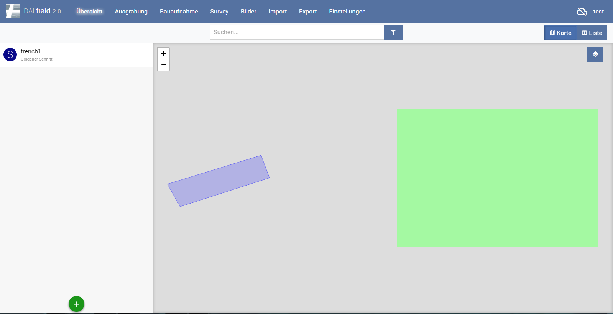 Abb. 2: Der Übersichtsbildschirm
Startseite des Clients. In diesem Bereich werden die verschiedenen Menü-Ebenen beschrieben. Rechts oben wird angezeigt, ob der Client zu einem anderen oder zum Server synchronisiert sowie der Projektname (Tutorial).\ (siehe: Abschnitt 5 Das Projekt, Abschnitt 3 Synchronisation mit anderen Client(s))
2.1 Übersicht
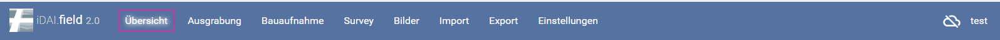
Der Übersichts-Bildschirm: Hier können Ressourcen angelegt werden und das gesamte Projekt überblicksartig betrachtet werden. Das Anlegen von Ressourcen geschieht über den Button. Hier können nur Haupttypen angelegt werden. Schnitte, Bauaufnahmen, Survey Areale und Orte.\ (siehe: Abschnitt 6 Anlegen von Ressourcen)
2.2 Ausgrabung
Der Ausgrabungs-Bildschirm: Hier können alle Ressourcen innerhalb von Schnitten eingesehen und bearbeitet werden. Die Zuordnung zum Schnitt wird automatisch vorgenommen, weitere Ressourcen werden immer innerhalb eines Schnittes angelegt. Jede Ressource kann ausgewählt werden, auf der rechten Seite wird eine Übersicht der eingetragenen Felder und deren Attribute angezeigt. Das Anlegen von Ressourcen geschieht über den Button. Zudem können weitere Schnitte hinzugefügt und bearbeitet werden .\ (siehe: Abschnitt 6 Anlegen von Ressourcen)
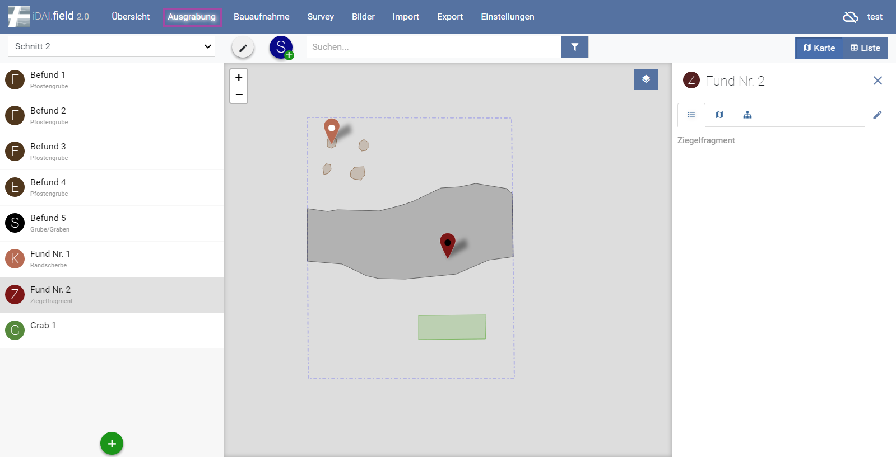 Abb 3: Der Ausgrabungs-Bildschirm
2.3 Bauaufnahme
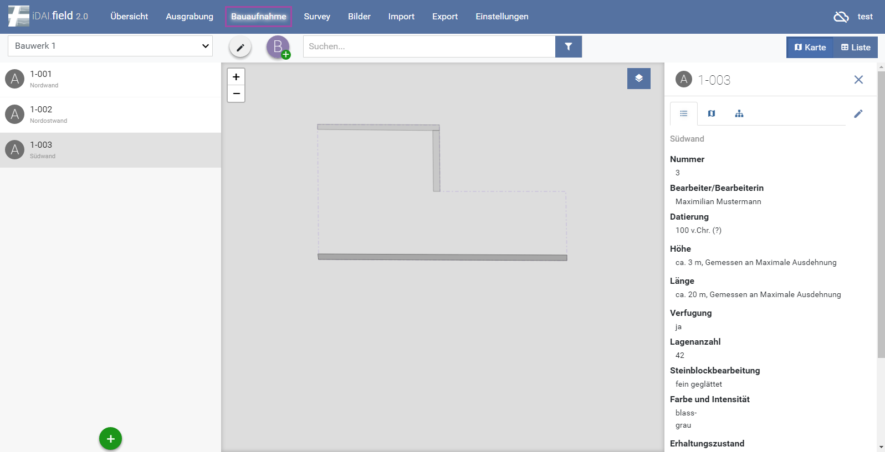 Abb 4: Der Bauaufnahme-Bildschirm
Der Bauaufnahme-Bildschirm: Hier können alle Ressourcen innerhalb von Bauaufnahmen eingesehen und bearbeitet werden. Die Zuordnung zur Bauaufnahme wird automatisch vorgenommen, weitere Ressourcen werden immer innerhalb einer Bauaufnahme angelegt. Jede Ressource kann ausgewählt werden, auf der rechten Seite wird eine Übersicht der eingetragenen Felder und deren Attribute angezeigt. Das Anlegen von Ressourcen geschieht über den Button. Zudem können weitere Bauaufnahmen hinzugefügt und bearbeitet werden .\ *(siehe: Abschnitt 6 Anlegen von Ressourcen)
2.4 Survey
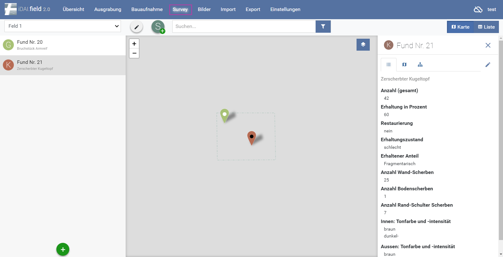 *Abb 5: Der Survey-Bildschirm
Der Survey-Bildschirm: Hier können alle Ressourcen innerhalb eines Survey-Areals eingesehen und bearbeitet werden. Die Zuordnung zum Survey-Areal wird automatisch vorgenommen, weitere Ressourcen werden immer innerhalb eines Survey-Areals angelegt.\ Jede Ressource kann ausgewählt werden, auf der rechten Seite wird eine Übersicht der eingetragenen Felder und deren Attribute angezeigt. Das Anlegen von Ressourcen geschieht über den Button. Zudem können weitere Survey-Areale hinzugefügt und bearbeitet werden .\ (siehe: Abschnitt 6 Anlegen von Ressourcen)
2.5 Bilder
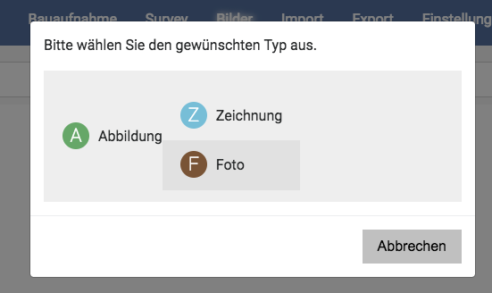\ Abb 6: Typauswahl der Abbildung
Hier können Abbildungen hinzugefügt werden. Nach dem Klicken auf den „Abbildung hinzufügen“ Bereich, erfolgt eine Auwahl über den Browser. Nur das .jpg-Format wird gegenwärtig unterstützt. Alternativ die Bilder per drag-and-drop fallen lassen. Bitte beachten Sie, dass der image-Pfad gesetzt ist (siehe: Quickstart)\ Nun kann ausgewählt werden, ob es sich um eine Zeichnung, Fotografie oder Abbildung handelt (Abb. 6)\ Nun kann die Abbildung mit einer oder mehreren Ressourcen verknüpft werden .\ Anschließend kann die abgebildete Ressource ausgewählt werden (Abb. 7/8).
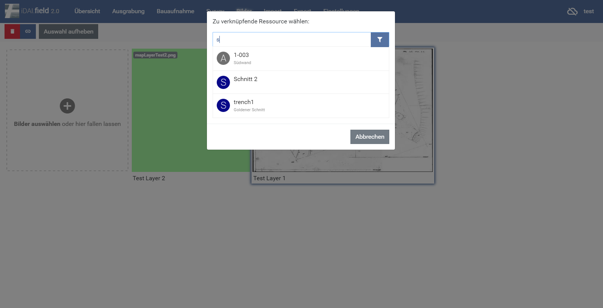 Abb 7: Zuweisung von Ressourcen
Zudem können selbstverständlich mit weitere
Fotoattribute eingetragen werden. Ein weiteres Feature ist die Zuweisung
von Georeferenzdaten (Abb. 9.1), um Hintergrundkarten zu erstellen.
Hierfür wird eine Rastergrafik (.jpg) und eine .wld-Datei benötigt,
welche die Koordinaten des Bildes enthält. Durch den Klick auf kann
das .wld hinzugefügt werden. Nun ist es als Hintergrundkarte verfügbar
und kann in den verschiedenen Bildschirmen aus- oder angeschaltet
werden. Anschließend ändert sich die Anzeige bei Georeferenzdaten in  .\
Wichtig ist hier, dass eine Kurzbeschreibung vorhanden ist, welche als
Überschrift der Basiskarten verwendet wird.
.\
Wichtig ist hier, dass eine Kurzbeschreibung vorhanden ist, welche als
Überschrift der Basiskarten verwendet wird.
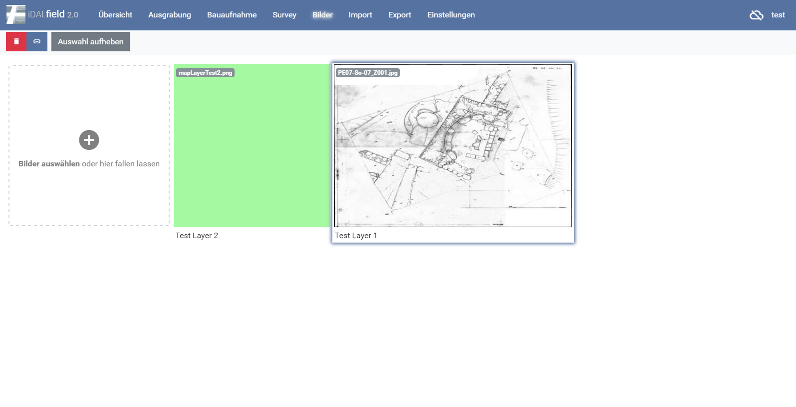 Abb 8: Foto mit verknüpfter Ressource
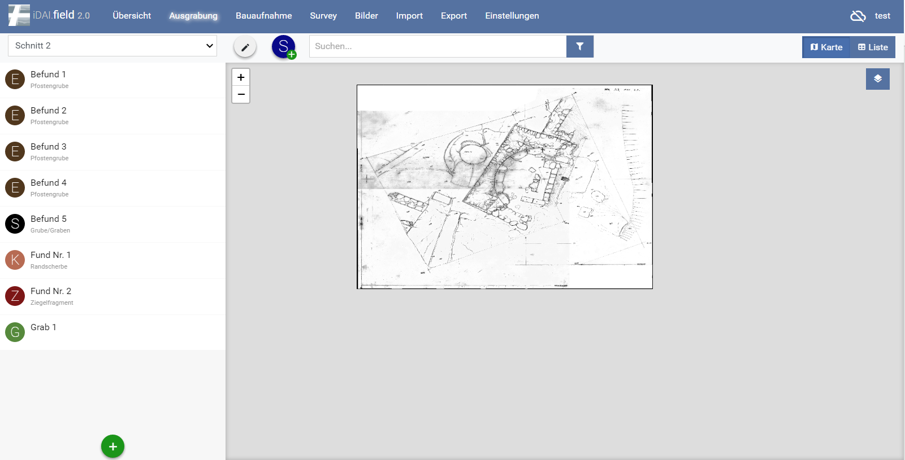 Abb 9: Hintergrundkarte
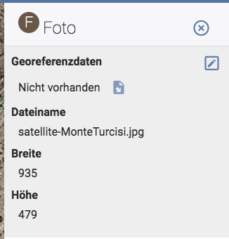\ Abb 9.1: Georeferenzbildschirm
Jeder Layer kann an- und ausgeschaltet und zentriert werden.
Soll solch eine Verknüpfung gelöscht werden, muss die Abbildung unter dem Reiter Bilder doppelt angeklickt werden. Alternativ kann über die verknüpfte Ressource darauf zugegriffen werden, indem man hier das Bild vergrößert. In beiden Fällen stehen am rechten Rand die Bildinformationen zur Verfügung. Über und den Reiter „Relationen“ lassen sich die Verknüpfungen anzeigen und löschen.
2.6 Import
Der Import lässt verschiedene Dateitypen zu (Quelle: Datei). Der Pfad für die betreffende Datei muss ausgewählt werden. Im Falle eines Imports aus einer iDAI.field-Datei (jsonl) kann der Import ohne weitere vorherige Maßnahmen durchgeführt werden. Soll eine GEOjson importiert werden, ist ein Feld „identifier“ in der Datei notwendig. Zudem muss die Ressource bereits im Client existieren, mit identischem Bezeichner. Anschließend erfolgt eine Meldung, wie viele Ressourcen importiert wurden. Existiert die Bezeichnung des Feldes „identifier „ als Ressource, wird diese automatisch den eingeladenen Zeichnungen zugeordnet.
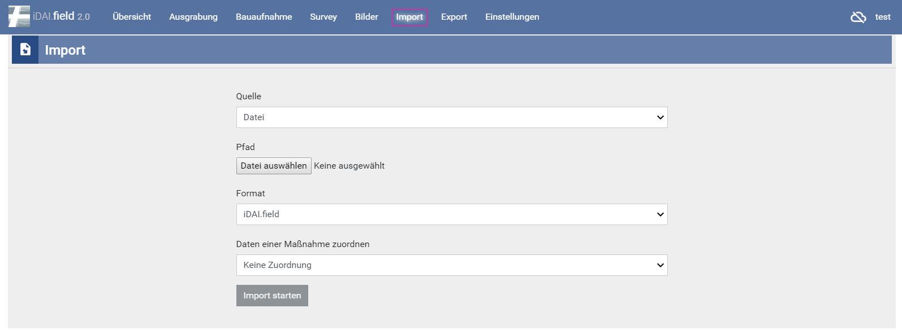 Abb 10: Importfenster
2.7 Export
Hier kann das gesamte Projekt exportiert werden. Die Dateiendung ist .jsonl. Diese kann bequem in den Client importiert werden, auch ohne das vorherige Anlegen von Ressourcen.
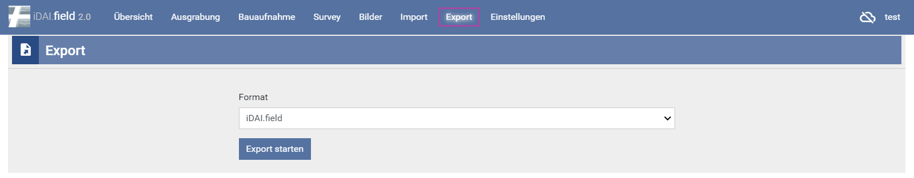 Abb. 11: Exportfenster
2.8 Einstellungen
Im Einstellungs-Fenster wird der/die aktuelle BenutzerIn, also BearbeiterIn eingetragen. Diese Information wird automatisch in die Datensätze geschrieben. Das Feld sollte nicht leer bleiben.\ (siehe: Abschnitt 3 Synchronisation mit anderen Clien(s))
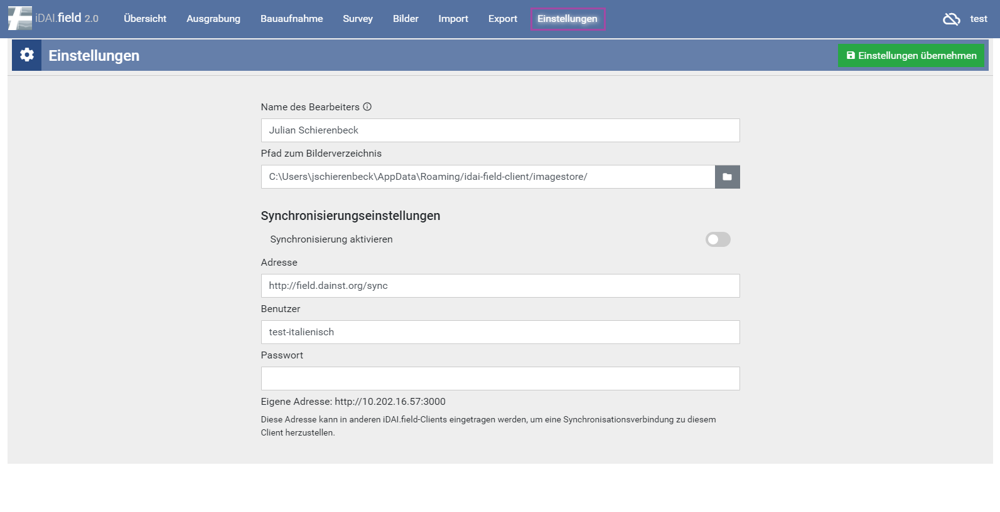 Abb. 12: Einstellungsfenster
3. Synchronisation mit anderen Client(s)
Der Client kann stets mit einem, oder mehreren anderen Clients verbunden und Synchronisiert werden. Das Symbol zeigt an, ob der Client derzeit verbunden ist. Durchgestrichene Wolke: Keine Verbindung. Durch einfaches klicken auf die Wolke werden die Synchronisationseinstellungen aufgerufen.
3.1 Synchronisation mit einem anderen Client
Über den Reiter Einstellungen werden die „Synchronisierungseinstellungen“ eingegeben. Die Felder „Benutzer“ und „Passwort“ sind bei einer einfachen Verbindung nicht erforderlich. Nur, wenn zu einem Server Synchronisiert wird, muss der Projektname eingetragen werden.\ Die Synchronisation läuft so lange, bis die Adresse aus dem Feld gelöscht und die Einstellungen übernommen werden.
3.2 Synchronisation mit mehreren Clients
Bei der Synchronisation mit mehreren anderen Clients existieren zwei Möglichkeiten.\ Im ersten Fall synchronisieren mehrere Rechner zu einem Masterclient und geben hierfür alle die Adresse dieses Clients in den Einstellungen an.\ Im Zweiten Fall bilden mehrere Rechner eine Kette und der erste synchronisiert zum zweiten, dieser zum dritten u.s.w. Hierfür wird die Adresse des jeweils nächsten in den Einstellungen verwendet. Das Synchronisieren untereinander ist zwar bei zwei Clients möglich, könnte allerdings zu fehlern führen.
3.3 Synchronisation über den Server field.dainst.org
 Abb 13: Synchronisationseinstellungen
Abb 13: Synchronisationseinstellungen
Zuerst müssen die Mitarbeiterinnnen und Mitarbeiter des IT-Referats des DAI ein Projekt auf dem Server anlegen. Bei der Synchronisation mit dem Server ist es weiterhin nötig, dass die spezifische Serveradresse eingetragen wird.
http://field.dainst.org/sync
Der Name des Projektes muss in diesem Fall im Benutzerfeld stehen und das Passwort ist standardmäßig der Name des Projekts. Zudem muss der Name des Projektes mit dem auf dem Server angelegten Projekt übereinstimmen.
4. Grundlegende Funktionen
4.1 Karten- und Listenansicht
In der oberen, rechten Ecke kann zwischen einer Karten- und einer Listenansicht unterschieden werden. Die Kartenansicht (Standard) zeigt hier die eingegebenen oder importierten Strukturen der Ressourcen und alle eingelesenen Karten an.
In der Listenansicht erhält der Nutzer eine tabellarische Ansicht aller angelegten Ressourcen\ Die erste Übersicht enthält hierbei eine kleine Auswahl an Informationen wie die Bezeichnung und die Kurzbeschreibung.
4.2 Suchen
In der Suchleiste ist es möglich, nach Namen von Ressourcen oder nach Teilbegriffen zu suchen.\ Bei Eingabe reduziert sich die Anzahl der angelegten Ressourcen bis das gesuchte übrig bleibt.\ Bei der Anwendung der Filter werden alle Ressourcen aus dem ausgewählten Filter angezeigt.
5. Das Projekt
Zu Beginn der Arbeiten, nach der Installation des Clients ist die
Datenbank leer.\
Die Bereiche im Hauptbildschirm sind ohne Funktion.\
Im rechten Bereich, neben , muss durch einfaches Klicken das Feld zum
„Projekte verwalten“ aufgerufen werden.\
Hier kann unter bereits bestehenden Projekten eine Auswahl getroffen
werden.
Über kann ein neues Projekt angelegt werden.
Im nebenstehenden Stiftsymbol kann das Bearbeitungsfenster des
Projektes erneut aufgerufen werden. Informationen lassen sich
nachtragen oder ändern.
Das Symbol  löscht ein Projekt. Die Eingabe des Projektnamens in die
Zeile ist nötig zur Bestätigung. Das Projekt ist nachfolgend endgültig
gelöscht.
löscht ein Projekt. Die Eingabe des Projektnamens in die
Zeile ist nötig zur Bestätigung. Das Projekt ist nachfolgend endgültig
gelöscht.
 Abb. 14: Anlegen eines neuen Projekts
Abb. 14: Anlegen eines neuen Projekts
6. Anlegen von Ressourcen
Je nach Reiter, Ausgrabung, Bauaufnahme oder Survey, wird über das Symbol im linken Bereich der zweiten Zeile ein neuer Schnitt, neues Bauwerk oder Survey angelegt. Nach dem Speichern der Ressource wird diese im Auswahlfenster links angezeigt. Hier kann zwischen verschiedenen Schnitten, Bauwerken oder Surveys gewechselt werden. Das ermöglicht die weitere Bearbeitung der Ressource.\ Ist eine Hauptressource angelegt können im linken Bildschirmabschnitt über das neue Ressourcen hinzugefügt werden. Diese beinhalten unter anderem Befunde, Funde, Gräber, Architektur, Bohrungen, Proben u.s.w.\ Jedes ist mit einem eigenen Symbol mit Anfangsbuchstaben gekennzeichnet.

Abb. 15: Anlegen von Hauptressourcen
Bei der Auswahl einer neuen Ressource öffnet sich das Fenster zur Eingabe einer Geometrie und nach der Auswahl, dass Fenster zur Dateneingabe.
6.1 Felder
Unter manchen Feldern findet ein Feld ohne Eingabemöglichkeit mit einem kleinen, grauen „Hinzufügen“ und einem . Dies öffnet ein weiteres Fenster zur Eingabe exakter Information. Das Eingeben mehrerer Felder ist hier möglich. In manchen Feldern muss eine Auswahl aus einer bestehenden Tabelle gewählt werden. Hier werden durch die Eingabe von Anfangsbuchstaben Vorschläge gemacht. Einige Felder gestatten nur die Eingabe von Informationen in einem speziellen Format. Die Eingabe eines Wortes in einem Feld, welches nur Zahlen zulässt führt z.B. zu der Fehlermeldung , welche lediglich bedeutet, dass eine Information nicht im korrekten Format eingegeben wurde.
6.2 Relationen
Beim Doppelklick auf eine Ressource, öffnet sich das
Bearbeitungsfenster.
Unter dem Reiter „Relationen“ können diese für die
Ressource, in Verbindung zu anderen, eingetragen werden.\
Unter den verschiedenen Auswahlmöglichkeiten befindet sich ein
Button. Durch einfaches Klicken öffnet sich ein Textfeld. Hier kann die
Bezeichnung einer anderen Ressource eingegeben werden. Automaitische
Vorschläge von den bereits bestehenden werden hier angezeigt. Einfaches
Klicken darauf lässt die Relation entstehen.\
Roter Button zur linken löscht die Relation.
6.3 Zuweisen von Ober- bzw. Subtypen
Es ist möglich, Ressoucen vom Typ Stratigrafische Einheit beispielsweise einem spezielleren Typ zuzuweisen (beispielsweise Grab). Dies trifft nur auf Ressourcen des gleichen Typs zu.\ Hier entstehen dann zusätzliche Felder.
7. Einfügen von Messplänen aus GIS
Wie im (Abschnitt 2.6 Import) bereits beschrieben ist es möglich GEOjson Dateien in die Datenbank einzuladen. Dies betrifft in der Regel Pläne und ist die vorgesehen Methode um Messpläne aus einem GIS in die Datenbank zu überführen. Hierfür muss ein „identifier“- Feld im Layer existieren und dieses Muss als Ressource angelegt sein. Stimmt die Eingabe im identifier-Feld mit der Ressource überein, so wird die Geometrie automatisch zu dieser zugeordnet.\ Ein GEOjson kann im bspl. Im QGIS einfach erstellt werden in dem per Rechtsklick auf den Layer „Speichern als“ und dann GEOjson ausgewählt wird.

Abb. 16: Speichern als GEOjson
7.1 Importieren von Multigeometrien
Sollten Fälle auftreten, bei denen es notwendig ist mehrere Strukturen einer Ressource mit einem identifier zuzuordnen, dann müssen diese Geometrien als Multigeometrien ausgegeben werden. Diese können im Anschluss als geoJSON in den Client importiert werden. Wird hingegen eine Datei eingeladen, welche aus mehreren Geometrien besteht, welche einfach denselben identifier besitzen, dann wird die vorherige Geometrie überschrieben und die letzte, importierte Geometrie wird im Client angezeigt.\ Für das Ausgeben von Multigeometrien gibt es in QGIS einen einfachen Weg. Über den Reiter „Vektor“ und der Auswahl „Geometrie-Werkzeuge“ wählt man das Werkzeug: „Ein- zu Mehrteilig“ oder im englischen „single part to multipart“.\ Hier muss zunächst der Eingabelayer, also der Layer welcher zusammengelegt werden soll, ausgewählt werden. Zum zweiten wird das Schlüsselfeld ausgewählt. Hier ist es notwendig das vorher angelegte Feld des identifiers zu wählen, da dieses Feld übertragen wird und man die Ausgabedatei direkt in den Client laden kann. Im letzten Feld wird der Speicherort festgelegt und das Speichermedium geoJSON ausgewählt. Mit Run wird der Prozess in Gang gesetzt. Das gespeicherte geoJSON kann nun als Multigeometrie in den Client importiert werden.

Abb. 17: Ein- zu Mehrteilig, QGIS
7.2 Verwendung von Survey 2 GIS
Für die Umsetzung einer Messung in GIS kann das Programm Survey 2 GIS verwendet werden. Dies setzt eingemessene Strukturen in GIS um, erstellt Geometrien und trennt nach Layern.\ Für die Verwendung ist ein Parser notwendig, der gegebenenfalls an die eigene Datenaufnahme angepasst werden muss.\ Eigene Daten werden im Feld „Eingabe“ in das Programm eingelesen. Im Darunter liegenden reiter „Parser-Schema“ wird der Parser ausgewählt. Weitere Einstellungsmöglichkeiten und Erklärungen sind ausführlich im offiziellen Handbuch zu finden, welches zweisprachig jeder Survey 2 GIS Version als PDF beiliegt.

Abb. 18: Arbeitsoberfläche Survey 2 GIS
7.2 Anwendung des Parsers
Ein Parser besteht aus zwei Bereichen. Der erste betrifft die allgemeine Arbeitsweise des Parsers, der zweite besteht aus verschiedenen Blöcken. Hierbei steht jeder Block für einen einzelnen Abschnitt im Messcode.\ Für dieses Beispiel wurde der Max Beispiel Parser verwendet.
[Parser]
name = survey2gis sample for mode "Max" Name des Parsers.
tagging_mode = max Welcher Modus, max, min, end, oder none.
tag_field = TAG Benennung des Geometrie Feldes
key_field = ID Benennung des Schlüssel Feldes. Bezeichnet das Feld, in dem sich die Kennummer der Geometrie befindet. Alle Messpunkte einer zusammengehörenden Geometrie benötigen dieselbe Benennung.
key_unique = Yes Mit Angabe dieses Feldes wird festgelegt, dass alle Messdateien mit demselben Schlüsselwert auch ein gemeinsamer Attributsatz zugeordnet wird.
tag_strict = No
no_data = -1
geom_tag_point = "." Einzelne Punktmessungen mit dem Code .
geom_tag_line = "$" Linienmessungen mit dem Code $
geom_tag_poly = "@" Polylinien mit dem Code @
coor_x = COORX
coor_y = COORY Benennung der Koordinatenfelder
coor_z = COORZ
comment_mark = # # Markierter Text ist Kommentar und wird nicht mit berechnet.
Im Anschluss folgen [Field] Felder bei denen jedes einzelne für eine Zeile in der Spalte steht.
67 1_GR_W_0_@_0 X 3513037.664 Y 5279881.392 Z 399.563
Messcode
Für die 67:
[Field]
name = IDX Name des Field Feldes. Jedes dieser Felder bekommt einen Namen. IDX steht hier für die Indexnummer. Eine durchgehende Messnummer die jede Messung braucht. Daher auch im Infofeld die Nachricht von 0 bis n.
info = Field with measurement index [0..n] Info.
type = integer Typ ist Ganzzahl.
empty_allowed = No Feld darf nicht leer sein.
separator = space Spaltentrenner ist Leerzeichen.
merge_separators = Yes Dürfen mehrere aufeinanderfolgende Trenner als einer behandelt werden, also mehrere Leerzeichen wie eins.
unique = Yes Wenn ja, dann wird überprüft ob der Wert mehrfach vergeben wurde.
Für die 1:
[Field]
name = LEVEL Name: Level als Angabe: Hier steht die Planumsnummer
info = N/A Info: Nicht angegeben
type = Integer Typ ist eine Ganzzahl
empty_allowed = No Feld darf nicht leer sein
separator = _ Trenner zum NÄCHSTEN Feld ist ein Unterstrich
merge_separators = No Mehrere Trenner sind hier nicht zulässig
Für das GR:
[Field]
name = TYPE Name: Hier steht der Typus der Linie oder des Fundes
info = N/A Info: Nicht angegeben
type = Text Typ ist ein Textfeld
empty_allowed = No Darf nicht leer sein
separator = _ Trenner zum NÄCHSTEN Feld ist ein Unterstrich
merge_separators = No
change_case = upper Gibt an, dass der Inhalt der Textfeldes in Großbuchstaben umgewandelt und ausgeschrieben werden soll, wenn hier nachfolgend durch @ markiert eine diesbezügliche Angabe gemacht wird.
@AU = Gold AU würde also als GOLD ausgeschrieben werden.
@AG = Silver
@KE = Pottery
Für das W:
[Field]
name = AUX Name: AUX. Weist auf ein Hilfsfeld hin
info = N/A
type = Text
empty_allowed = No
separator = _
merge_separators = No
change_case = upper
@P = Control point Feld ist angelegt, damit der Buchstabe P in CONTROL POINT umgewandelt wird.
Für die erste 0:
[Field]
name = FEAT Name: FEAT steht für feature number. Befundnummer
info = N/A
type = Integer
empty_allowed = No
separator = _
merge_separators = No
Für das @ Zeichen:
[Field]
name = TAG Name TAG. Geometrie tag. Angabe um welche Art es sich handelt. Wird im Hauptbereich des Parsers festgelegt. @ = Polylinie, Punkt wäre ein Punkt usw.
info = N/A
type = Text
empty_allowed = No
separator = _
merge_separators = No
skip = Yes Skip Yes bedeutet, dass das Feld zwar berechnet, jedoch nicht n der Ausgabedatei gespeichert wird. Es wird geskippt, da es nur für die Berechnung wichtig ist.
Für die zweite 0:
[Field]
name = ID Name: Besonderes ID Feld, wird durch den Hauptbereich als Schlüsselfeld festgelegt. Gibt an die wievielte Linie man zeichnen lässt. Hier im bspl die 0. Die Nächste Struktur wäre 1, die darauf 2 usw.
info = N/A
type = Integer
empty_allowed = No
separator = space Angabe, dass der Trenner wieder ein Leerzeichen ist.
merge_separators = YesA ngegeben, dass die Menge der Leerzeichen egal ist.
unique = Yes Hier wird wieder überprüft, ob der Wert mehrfach vergeben wurde, da man ja jede Struktur nur einmal zeichnen lassen kann.
Für die nachfolgenden Spalten der X Koordinaten
[Field]
name = XLABEL Dieses Feld für das X vor den Koordinaten
info = Useless field welches nur mit X benannt ist.
type = text
empty_allowed = No
separator = space
merge_separators = Yes
skip = Yes
Für das Koordinatenfeld der X Koordinaten
[Field]
name = COORX Angabe aus dem Hauptbereich. Hier X Koordinaten
info = Holds X coordinate
type = double
empty_allowed = No
separator = space
merge_separators = Yes
Für die nachfolgenden Spalten der Y Koordinaten
[Field]
name = YLABEL Dieses Feld für das Y vor den Koordinaten
info = Useless field welches nur mit Y benannt ist.
type = text
empty_allowed = No
separator = space
merge_separators = Yes
skip = Yes
Für das Koordinatenfeld der Y Koordinaten
[Field]
name = COORY Angabe aus dem Hauptbereich. Hier X Koordinaten
info = Holds Y coordinate
type = double
empty_allowed = Noseparator = spacemerge_separators = Yes
Für das Feld der Z Koordinaten ebenfalls zwei Field Felder benötigt. Mit den vorherigen beinahe baugleich, mit der Ausnahme, dass im letzten Feld kein Seperator Feld, also kein Trennungsfeld, mehr vorhanden sein darf.
Natürlich muss man sich beim Verwenden von Survey2GIS nicht strikt an diese Art des Parsers oder aber die damit verbundene Benennung von Messungen halten.
Es ist natürlich möglich einen eigenen Vermessungscode zu verwenden und dann den Parser anzupassen.
Wichtig ist, dass jeder einzelne Teilbereich einer Zeile mit einem [Field] Feld belegt ist, sodass das Programm dieses berechnen kann.
Man geht von links nach rechts vor und schreibt für jeden Abschnitt der Codezeile das entsprechende Feld.
Auch weitere, hier nicht genannte Befehle existieren und können im Handbuch nachgesehen werden.
Wichtig: Die genannten Trennungszeichen müssen eingehalten werden, ebenso wie deren Anzahl, wenn das Feld merge_seperators mit No angegeben wurde.
8. Integration von Messdaten von AutoCAD zu iDAIfield 2.0
Bei der Integration von Daten aus CAD müssen diese zuvor in GIS geladen und von dort in das Format geoJSON überführt werden, damit die Datenbank diese Messdateien aufnehmen kann.\ QGIS ist in der Lage DXF.-Dateien zu laden. Jedoch sind ein paar weitere Arbeiten notwendig.\ Zum ersten muss die Datei als DXF. Vorliegen. Diese kann als Vektorlayer im GIS geladen werden.\ Dieser Layer muss als shape (shp.) gespeichert werden. Über den Reiter „Vektor“ muss im Unterpunkt „Geometrie-Werkzeuge“ die Anwendung „Geometrie Prüfen“ ausgewählt werden. Ist diese nicht vorhanden muss sie als Plugin installiert oder/und zugeschaltet werden.\ Im Anschluss muss ein neues GRASS-Mapset erstellt werden. Der Eingabelayer muss ausgewählt und ein Ausgabelayer definiert werden. Nach drücken des „Start“ Buttons, kann das Ergebnis visualisiert werden.
 \
Abb. 19: Geometrien Prüfen
\
Abb. 19: Geometrien Prüfen
Vor dem umwandeln in Polygone muss die Datei durch das Tool bearbeitet werden. Hier werden alle noch frei stehenden Linien geschlossen, sodass sie weiter verarbeitet werden können.
 Abb. 20: v.Clean Bereinigungswerkzeug
Abb. 20: v.Clean Bereinigungswerkzeug
Im Reiter „Cleaning Tool“ muss snap eingestellt sein. Dies ist nicht der Standard. Bei „Threshold“ wird die Entfernung eingegeben in welcher Linien gesnapt werden, Diese darf nicht zu groß sein, empfohlen wird hier 0,001 (10 cm). Es kann jedoch notwendig sein, diese Entfernung auf die eigenen Daten an zu passen.\ Die so entstandenen Layer können mit dem Tool „Linien zu Plygonen“, zu finden unter dem Reiter Vektor und dem Bereich Geometrie-Werkzeuge, in Polygone umgewandelt werden.
 Abb. 21: Linien zu Polygonen
Abb. 21: Linien zu Polygonen
Ein Problem stellen fehlende Außenlinien dar. Diese sind bei manchen CAD-Zeichnungen nicht unbedingt vorhanden, wie im unten angegebenen Beispiel. Hier muss für den Befund 026 eine Außenlinie definiert werden. Dies muss leider händisch erfolgen und ist vor der Anwendung Linien zu Polygon vor zu nehmen.
 Abb. 22: Beispiel CAD-Plan
Abb. 22: Beispiel CAD-Plan
Für die Integration in den iDAIfield Client müssen die Layer natürlich mit einem Identifier-Feld versehe werden. Sollen Befundnummern mit übertragen werden ist das anlegen von Punktlayern zu diesem Zweck ein einfacher Weg.
9. Integration von 3D-Fotogrammetrien
 \
Abb. 23: Exporteinstellungen
\
Abb. 23: Exporteinstellungen
Im Anschluss der Berechnung des 3D Modells, hier im Beispiel mit Agisoft PhotoScan, muss ein Orthophoto generiert und entsprechend als jpeg. ausgegeben werden. Dieses kann problemlos in den Client geladen werden.
Bei der Verwendung von Messmarkern, kann eine World file-Datei mit ausgegeben werden. Diese wld. kann im Client zur georeferenzierung verwendet werden.
Unter dem Reiter „Workflow“ wird hier die Funktion „Build Orthomosaic“ ausgewählt. Dieses ist bei Photoplan erst nach dem Speichern des Modells möglich.\ Im Anschluss findet sich unter dem Reiter „File“ die Anwendungsmöglichkeit „Export Orthomosaic“ und die Wahlmöglichkeit Export JPEG/TIFF/PNG…
Hier muss im Kästchen von „Write World file“ das Häkchen gesetzt sein.\ Nach dem klicken auf „Export“ wird ein Speicherort ausgewählt und der Dateityp festgelegt.
10. Verwendung von owncloud zur Bildverknüpfung im Client
Zur einfacheren Bildverknüpfung mit dem Server kann ein Ordnerpfad über owncloud angelegt werden. Dies hat den Vorteil, dass alle beteiligten auf die originalen Bilddaten zugriff haben.\ Die owncloud greift auf den Server des DAI zu und Synchronisiert alle Bilder zum Projektordner.
 \
Abb. 24: Eingabe der Serveradresse
\
Abb. 24: Eingabe der Serveradresse
Nach der Installation wird die DAI Cloud als Ziel ausgewählt. Nachfolgend werden die DAI internen Zugangsdaten abgefragt.\ Nach erfolgreichem Log in wird dem Nutzer eine Ordnerauswahl zur Verfügung gestellt. Wählen Sie den Ordner ihres Projektes aus.
 \
Abb. 25: Auswählen des Ordners
\
Abb. 25: Auswählen des Ordners
Die Synchronisation läuft nun zu diesem Order. Ändern Sie den Zielordner der Bilder im Client unter „Einstellungen“.